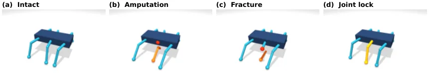

PGRR：不可逆腿部损伤后，用持续性档案引导的无重置恢复改进最终步态选择
Persistent Profile-Guided Reset-Free Recovery Improves Final Gait Selection after Irreversible Leg Damage
离线阶段对 24 个候选步态反复执行形成长时档案（1,944 个档案来自 81 个条件：3 类损伤 × 腿 0–2 × 摩擦 {0.90,1.00,1.10} × 损伤时刻 {1.5,2.0,2.5} s，每条件 12 个候选 × 2 个种子；每次执行 12 段 0.75 s 加一个 3 s 终段），对 8 个目标（存活、早/中/末期质量、最终质量、持久性、路径终端误差、能量）各用 5 个高斯过程回归器给出均值与不确定度。在线阶段用保守下界 L=μ−βσ 排序（首轮 β=0.50，之后 0.35），先做 0.75 s 探测、按门槛决定是否延长 0.75 s、用观测以 RBF 加权残差（权重 0.35）更新预测，并在两次探测之间用当前最优步态做 0.75 s 桥接——全程不重置机器人。留出评测为 36 个物理条件 × 3 个种子 = 108 个匹配任务，对照 IT&E 风格 GP 与不进行自适应：最终质量 +0.106 [0.062,0.153]、SRQ +0.044 [0.008,0.082]、低质量失败 −0.278 [−0.398,−0.167]（对 IT&E-GP）；对不进行自适应为最终质量 +0.086 [0.046,0.131]、失败 −0.176 [−0.306,−0.065]，而 SRQ 仅 +0.009 [−0.018,0.037]（不确定）。
final quality gain
SRQ gain
low-quality failure reduction
persistence prediction correlation
作者、单位与技术谱系 · Research context
作者与单位
研究脉络
- Intelligent Trial and Error（IT&E）与行为库方法基座关系：PGRR 的候选池与「离线建库、在线少量试验」框架来自 IT&E 一系；本文用 IT&E 风格 GP 作为主对照，并指出差异在于它更强调候选在重复执行中的期望表现以及在恢复过程中如何用观测修正期望。[官方 HTML 全文（第 II、V-A 节）]
- Reset-free Trial and Error（RTE）上游工作关系：本文的问题设定直接来自 RTE：RTE 评估恢复时让后续试验继承前一次产生的物理状态，但没有刻画「最终被选中的步态在自适应之后单独执行时表现如何」，PGRR 补上这一区分。[官方 HTML 全文（第 I 节）]
- 安全贝叶斯优化与风险敏感试验选择上游工作关系：保守的不确定性惩罚（下界排序、可行性门槛）在思想上与安全贝叶斯优化一系同源；本文明确声明不主张形式化安全保证，只使用不确定度惩罚与可生存性阈值。[官方 HTML 全文（第 II 节）]
合作网络
- 无公开合作边Minjoong Kim（独立研究者） → —关系：未发现公开合作边[官方 HTML 全文（首页作者信息与脚注）]
- 对 MuJoCo 与 IT&E 一系基线文献的方法依赖PGRR 实验平台 → MuJoCo（六足仿真，5 ms 步长）与 IT&E 一系对照实现关系：明确技术依赖（仿真平台与文献基线）[官方 HTML 全文（第 III-A、V-A 节）]
作者身份与「独立研究者」说明来自论文首页脚注（论文报告的事实），因此不存在可核验的机构网络；lineage 中的「基座/上游」定位来自第 I–II 节对 IT&E 与 RTE 的引用与差异说明（基于来源的解读）；单作者稿件未披露导师或课题组关系，故不作此类推断。
方法本质拆解 · What actually changed
是不是微调？——不训练策略，只训练离线代理模型
PGRR 不训练任何控制策略：24 个候选步态是预先给定的参数化步态，机器人用它们执行。被训练的是离线代理——每个目标 5 个高斯过程回归器（最多 192 个训练样本、RBF 核），在 1,944 个档案上学习目标均值与不确定度并用分组条件交叉验证的残差做区间缩放。在线阶段只更新预测后验与不确定度，不改变步态本身或任何神经网络权重。
有没有额外约束？——不重置的物理连续性 + 保守下界 + 显式可行性门槛
硬约束是「无重置」：每次探测继承上一步运动的位姿、速度、接触、位置与损伤状态，桥接段也是真实执行的运动，因此每次都改变下一次的初始条件。决策侧约束是把不确定度写进排序（L=μ−βσ，β 首轮 0.50、之后 0.35）、只在存活下界邻域内比较持久性效用、以及只在（换向、速度、能量）达标时才延长探测；可行性与停止条件都是显式门槛而非学习得到。
推理/后端到底做了什么？——在线选择 + 短探测 + 残差更新 + 桥接
每次试验的推理链是：用当前预测与不确定度选出候选；执行 0.75 s 探测；按门槛决定是否再延长 0.75 s；把观测通过 RBF 加权残差（权重 0.35）写回邻近预测并降低其不确定度；用当前最优步态执行 0.75 s 桥接；循环直到停止条件或十次上限；最后让被选步态从当前状态连续执行 3 s 作为终态质量。整个过程没有全局优化器或重规划后端，唯一的外部计算是 GP 后验更新。
方法本质是什么？——把「选步态」从短时排序改成带不确定度的持续执行外推
本质是改变候选排序所依据的量：不再用短时试验的表现，而用「重复执行时的长时档案」预测多个未来结果，并对不确定度做保守惩罚，从而偏向那些在持续执行中不易崩溃的候选；同时用桥接段保持物理状态连续，使自适应过程本身不成为额外损伤。它没有做的是：没有给出形式化的安全保证，也没有解决持久性预测最弱这一问题，因此不能声称长时档案是收益的主要来源。
输入/先验 = 24 个参数化候选步态 + 1,944 个重复执行档案（81 个条件）+ 每个目标 5 个高斯过程代理；改变的位置 = 候选排序依据（短时试验表现 → 长时档案的保守下界预测）与自适应过程的物理连续性（引入不重置的探测—延长—桥接）；约束或合并动作 = L=μ−βσ（β=0.50/0.35）、存活下界 0.70 门槛、RBF 加权残差（权重 0.35）更新、桥接 0.75 s 与四条停止条件；直接效果 = 108 个留出任务上最终质量 +0.106、SRQ +0.044、低质量失败 −27.8 个百分点，而去掉不确定度惩罚会同时降低 SRQ（−0.045）与最终质量（−0.068）。

桥接价值Bridge
桥接价值
本文最可迁移的不是具体的步态选择策略，而是评测与报告的纪律：它把「搜索过程中的平均恢复质量（SRQ）」与「最终被选中步态独立执行的质量」分开度量，并明确说明前者包含后者、不是独立证据；还给出了一个反直觉案例——在关节锁死条件下 SRQ 反而下降而最终质量上升。对你的可靠性评测而言，这提醒要把「过程中的平均表现」与「最终交付物的表现」分别报告，并说明两者的包含关系，否则很容易把改善最终结果的策略误判为拖累了整体。
方法与模块Method
方法摘要
离线：24 个候选步态（周期、占空比、步幅、抬腿高度、六个相位偏移等）在 1,944 个档案上被反复执行，形成 8 维结果目标的均值与不确定度（每个目标 5 个 GP，最多 192 个训练样本，RBF 核，用分组条件交叉验证的残差做区间缩放以达到 95% 名义覆盖）。在线：用下界 L=μ−βσ 保守排序候选（首轮 β=0.50、之后 0.35），首轮在存活下界 0.03 邻域内按持久性效用排序，之后优先选未试且存活下界 ≥0.70 的候选；执行 0.75 s 探测，若换向/速度/能量分数达到 0.20/0.15/0.15 则延长 0.75 s；用观测通过 RBF 加权残差（权重 0.35）更新附近预测并降低其不确定度；每次试验后用当前最优步态做 0.75 s 桥接（不重置）；停止条件为桥接质量低于 0.35、低于历史最优的 60%、连续两次不可行探测或达到十次试验上限。
可迁移模块
第一，可迁移「保守下界排序 + 观测后更新」的在线决策模板：把不确定度显式打进排序分数（μ−βσ），并在每次短探测后用邻近更新的方式修正预测，这一结构可直接搬到你在有限预算下筛选配置/参数（例如滤波器参数、外点阈值）的场景。第二，可迁移「探测—延长—桥接」的三段预算分配：探测只为判断是否有希望、延长只给有希望的候选、桥接用于保持系统处于可用状态，这套划分很适合迁移到不能随意重启的在线系统。第三，可迁移「过程指标 + 终态指标」的分离报告方式，以及「未使用的预算槽位用终态质量填补、并说明这是评分约定而不是额外测量」的透明做法。

证据Evidence
关键证据与数字
主结果（第 VI-A 节、表 I–II，108 个留出任务）：相对 IT&E 风格 GP 基线，SRQ +0.044 [+0.008,+0.082]、最终质量 +0.106 [+0.062,+0.153]、低质量失败率 −0.278 [−0.398,−0.167]，三个区间都不含零；按物理条件聚类重抽样后三个差异仍为正。相对不进行自适应：最终质量 +0.086 [+0.046,+0.131]、失败率 −0.176 [−0.306,−0.065]，但 SRQ 只有 +0.009 [−0.018,+0.037]（不确定）。损伤类别差异（第 VI-C 节）：关节锁死下 SRQ 反而下降 −0.035 [−0.090,+0.020] 而最终质量上升 +0.098 [+0.021,+0.177]；不进行自适应该类 SRQ 已高达 0.418（截肢 0.097、骨折 0.099），PGRR 在关节锁死下平均执行 4.0 次试验（截肢 1.86、骨折 1.67）。消融（第 VI-D 节、表 III，27 个开发任务）：去掉不确定性惩罚（β=0）使 SRQ −0.045 [−0.083,−0.011]、最终质量 −0.068 [−0.136,−0.011]；短视剖面排序为 −0.046 [−0.096,+0.001]（不确定）；默认桥接为 −0.035 [−0.092,+0.020]（不确定）。预测精度：存活相关系数 0.879、末期质量 0.713、最终质量 0.651、持久性仅 0.382，MAE 在 0.124–0.192 之间。
边界与下一步Limits & Next Step
边界与风险
第一，留出集已被消耗：作者明确写 108 个任务是冻结留出且「已用尽」，不能再作为进一步调参后的新鲜验证集，这是可复现性上的硬约束。第二，SRQ 是按槽位平均且把提前停止后的空槽用终态质量填补的评分约定，不是时间积分，因此 SRQ 的改善不能解释为「持续更久」；在关节锁死下 PGRR 只是最早在 2/36 个任务首轮停止，SRQ 下降反映的是探测/桥接成本抵消了更好的终态。第三，最弱的目标是持久性（预测相关系数 0.382），而持久性正是「长时间仍有效」的核心量，作者也承认短视剖面消融不确定，因此「长时档案本身带来收益」这一说法证据不足。第四，全部实验在 MuJoCo 六足仿真中完成，损伤被建模为连接性损失与关节固定，不含材料断裂或损伤检测；从 27 个开发任务得出的消融结论与替代器训练条件重叠，属开发期诊断而非独立机制验证。
下一步实验
建议借鉴两点并各做一个小实验。(a) 在线决策模板：把「保守下界排序 + 短探测 + 邻近更新」用到你自己的参数/配置筛选上（例如回环接受阈值或外点门限），量测用终态指标（最终位姿/地图质量）而不是过程平均，并同时报告两者的关系。(b) 复制它的一条负结果作为自检：先测量「不进行自适应」的基线在各类退化条件下已经有多好（本文关节锁死下基线 SRQ 高达 0.418），再判断自适应是否有空间——如果基线已经很好，自适应的过程成本可能让过程指标变差而终态变好，这种情形必须分指标报告。若要在真机推进，请把「探测/桥接」的时间与能耗成本显式计入指标，并把留出集一次性冻结，避免反复使用同一集合。